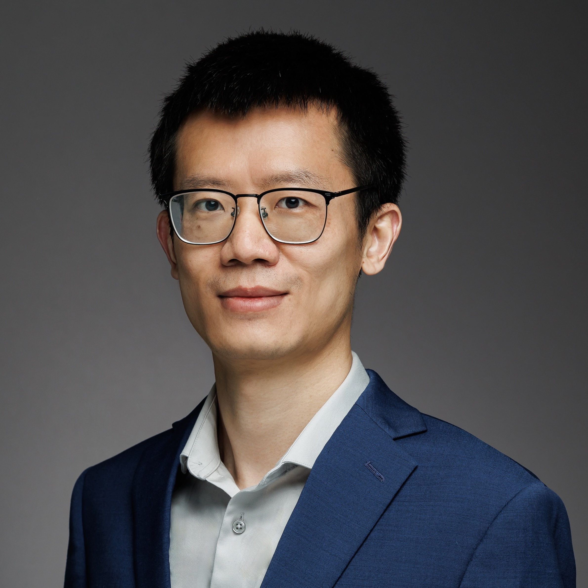

|  |
Assistant Professor |
Linghao Song is an Assistant Professor in the Department of Electrical & Computer Engineering at Yale University.
Before joining Yale, he conducted postdoctoral research in UCLA Computer Science Department
under the supervision of Professor Jason Cong.
He received Ph.D. in Computer Engineering from Duke University under the supervision of
Professor Yiran Chen and
Professor Hai (Helen) Li in 2020,
M.S. in Electrical Engineering from University of Pittsburgh in 2017, and
B.S.E. in Information Engineering from Shanghai Jiao Tong University in 2014.
His research interests include accelerator architecture, accelerator/acceleration systems,
FPGAs, computer architecture,
and machine learning acceleration. He received 2020 EDAA Outstanding Dissertation Award and
2021 Duke ECE Outstanding Dissertation Award.
We have openings for Ph.D. students in Electrical and Computer Engineering at Yale University for Fall 2026. The research topic is acceleration/accelerator systems design and implementation. Candidates should have a strong background in one or more areas of computer systems, accelerator architecture, programming abstraction, compiler, performance optimization, FPGAs/GPUs, etc, plus strong coding skills. Real system experience is a big plus. If you are interested, please email me your CV, transcripts, and links to open-sourced projects.
Ph.D. in Computer Engineering, Aug. 2017 - Aug. 2020.
Advisors: Prof. Yiran Chen and Prof. Hai (Helen) Li.
Thesis: Accelerator Architectures for Deep Learning and Graph Processing.
M.S. in Electrical Engineering, Aug. 2014 - May. 2017.
B.S.E. in Information Engineering, Sep. 2010 - Jun. 2014.
Duke ECE Outstanding Dissertation Award, 2021.
EDAA Outstanding Dissertation Award, 2020.
ASP-DAC Best Paper Nomination, 2018.
ASP-DAC Best Paper Award, 2017.
John A. Jurenko Graduate Fellowship, 2015.
Excellent Graduate of Shanghai, 2014.
National Scholarship of China, 2012.
Linghao Song, Xuehai Qian, Hai Li, and Yiran Chen,
PipeLayer: A Pipelined ReRAM-Based Accelerator for Deep Learning. [800+ Citations]
HPCA’17 : 2017 IEEE International Symposium on High Performance Computer Architecture, Austin, TX, USA, February 4 - 8, 2017.
Linghao Song, Youwei Zhuo, Xuehai Qian, Hai Helen Li, and Yiran Chen,
GraphR: Accelerating Graph Processing Using ReRAM. [300+ Citations]
HPCA’18 : IEEE International Symposium on High Performance Computer Architecture, Vienna, Austria, February 24-28, 2018.
Linghao Song, Jiachen Mao, Youwei Zhuo, Xuehai Qian, Hai Li, and Yiran Chen,
HyPar: Towards Hybrid Parallelism for Deep Learning Accelerator Array. [100+ Citations]
HPCA’19 : 25th IEEE International Symposium on High Performance Computer Architecture, Washington, DC, USA, February 16 - 20, 2019.
Linghao Song, Fan Chen, Youwei Zhuo, Xuehai Qian, Hai Li, and Yiran Chen,
AccPar: Tensor Partitioning for Heterogeneous Deep Learning Accelerators.
HPCA’20 : IEEE International Symposium on High Performance Computer Architecture, San Diego, CA, USA, February 22 - 26, 2020.
Linghao Song, Fan Chen, Hai Li, and Yiran Chen,
ReFloat: Low-Cost Floating-Point Processing in ReRAM for Accelerating Iterative Linear Solvers.
SC’23 : International Conference for High Performance Computing, Networking, Storage and Analysis, Denver, CO, USA, November 12 - 17, 2023.
Linghao Song, Licheng Guo, Suhail Basalama, Yuze Chi, Robert F. Lucas, and Jason Cong,
Callipepla: Stream Centric Instruction Set and Mixed Precision for Accelerating Conjugate Gradient Solver.
FPGA’23 : The 2023 ACM/SIGDA International Symposium on Field-Programmable Gate Arrays, Monterey, CA, USA, February 12 - 14, 2023.
Linghao Song, Yuze Chi, Atefeh Sohrabizadeh, Young-kyu Choi, Jason Lau, and Jason Cong,
Sextans: A Streaming Accelerator for General-Purpose Sparse-Matrix Dense-Matrix Multiplication.
FPGA’22 : The 2022 ACM/SIGDA International Symposium on Field-Programmable Gate Arrays, Virtual Event, USA, February 27 - March 1, 2022.
Linghao Song, Yuze Chi, Licheng Guo, and Jason Cong,
Serpens: A High Bandwidth Memory Based Accelerator for General-Purpose Sparse Matrix-Vector Multiplication.
DAC’22 : Proceedings of the 59th Annual Design Automation Conference, San Francisco, CA, USA, July 11 - 14, 2022.
Linghao Song, Fan Chen, Steven R. Young, Catherine D. Schuman, Gabriel Perdue, and Thomas E. Potok,
Deep Learning for Vertex Reconstruction of Neutrino-nucleus Interaction Events with Combined Energy and Time Data.
ICASSP’19 : 2019 IEEE International Conference on Acoustics, Speech and Signal Processing, Brighton, UK, May 12 - 17, 2019.
Fall 2025: ECE 8880 FPGA-Based Accelerator Design and Implementation.
International Symposium on Computer Architecture (ISCA): 2025 (Artifact Evaluation Co-Chair).
ACM/IEEE International Symposium on Low Power Electronics and Design (ISLPED): 2024 (Publicity Co-Chair), 2023 (Publicity Co-Chair), 2022 (Publicity Chair).
International Green and Sustainable Computing Conference (IGSC): 2024 (Web Chair), 2023 (Web Chair), 2022 (Web Chair).
International Symposium on Computer Architecture (ISCA): 2025.
Design Automation Conference (DAC): 2025, 2023, 2022, 2021.
Design, Automation & Test in Europe (DATE): 2025, 2024.
Asia and South Pacific Design Automation Conference (ASP-DAC): 2025, 2023.
IEEE International Conference on Computer Design (ICCD): 2024, 2023, 2022, 2021.
IEEE International Conference on Artificial Intelligence Circuits and Systems (AICAS): 2021.
European Conference on Computer Systems (EuroSys): 2020 (Shadow PC).
International Conference on Neuromorphic Systems (ICONS): 2018.
USENIX Symposium on Operating Systems Design and Implementation (OSDI): 2021.
European Conference on Computer Systems (EuroSys): 2021.
International Conference on Architectural Support for Programming Languages and Operating Systems (ASPLOS): 2021, 2020.
ACM SIGPLAN/SIGBED International Conference on Languages, Compilers, Tools and Theory for Embedded Systems (LCTES): 2019.
DAC’22: Optimizing Neural Network Hardware: Sparsity, Reuse and System.
DAC’22: Domain-Specific PIM Accelerators from Client to Cloud.
ASP-DAC’22: Accelerator Architectures for Machine Learning.
AICAS’21: Hardware for AI.
ACM Journal on Emerging Technologies in Computing Systems (JETC).
ACM Transactions on Architecture and Code Optimization (TACO).
ACM Transactions on Design Automation of Electronic Systems (TODAES).
Elsevier Neurocomputing.
IEEE Computer Architecture Letters (CAL).
IEEE Embedded Systems Letters (ESL).
IEEE Internet of Things Journal (IoT-J).
IEEE Micro.
IEEE Transactions on Circuits and Systems II (TCAS-II).
IEEE Transactions on Computers (TC).
IEEE Transactions on Computer-Aided Design of Integrated Circuits and Systems (TCAD).
IEEE Transactions on Emerging Topics in Computing (TETC).
IEEE Transactions on Industrial Electronics (TIE).
IEEE Transactions on Knowledge and Data Engineering (TKDE).
IEEE Transactions on Neural Networks and Learning Systems (TNNLS).
IEEE Transactions on Parallel and Distributed Systems (TPDS).
IEEE Transactions on Very Large Scale Integration Systems (TVLSI).
ICML, ICLR, NeurIPS, ISCA, HPCA, FPGA, DAC, ICCAD, DATE, ASP-DAC, ESWEEK.